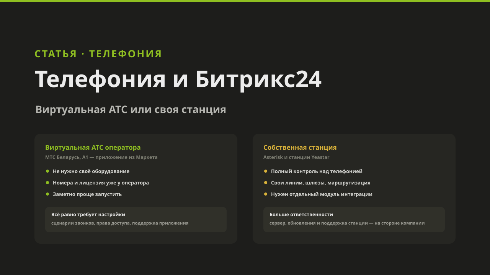
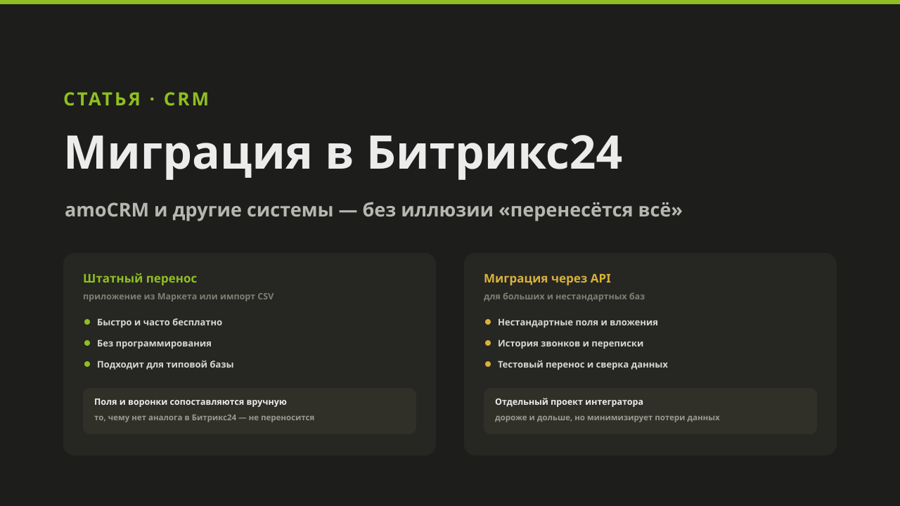
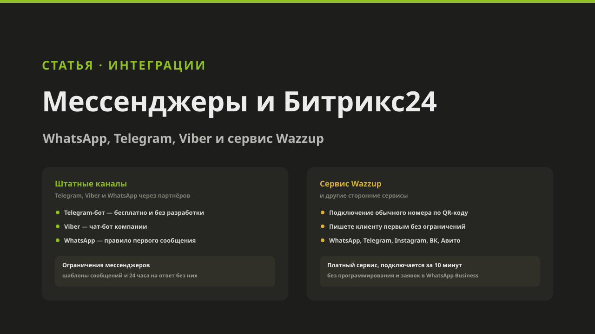
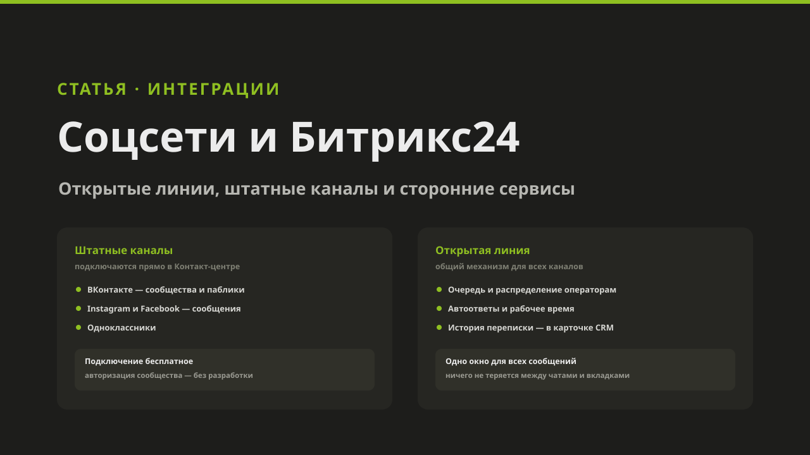
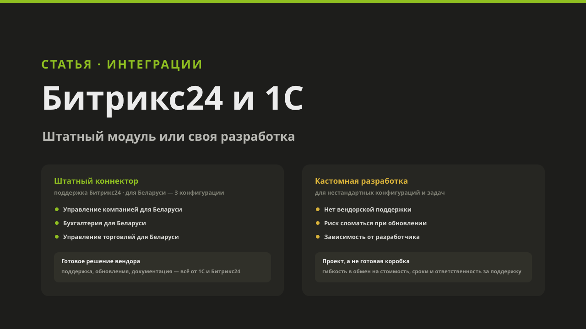

Новости и акции
Новости компании, обновления по Битрикс24 и телефонии, выступления и акции для наших клиентов.

XIV встреча «Содружество»: мы партнёры, Алина Лихненко проведёт дискуссию
18 сентября в Минске — XIV встреча «Содружество. Маркетинг + PR + HR». «АйТи Аналитикс» — партнёр и соорганизатор мероприятия, Алина Лихненко проведёт дискуссию о зрелости бизнеса.
Читать →
Интеграция телефонии с Битрикс24: виртуальная АТС или своя станция
Облачная ВАТС от МТС и А1 или собственная станция на Asterisk и Yeastar — как звонки становятся частью CRM и зачем для своей станции нужен отдельный модуль интеграции.
Читать →
Миграция в Битрикс24: перенос данных из amoCRM и других CRM
Штатные мигратора из Маркета, импорт CSV и миграция через API — как переносят данные в Битрикс24 и почему часть данных теряется при любом способе.
Читать →
Интеграция мессенджеров и Битрикс24: WhatsApp, Telegram и сервис Wazzup
Штатные каналы Открытых линий для WhatsApp и Telegram, правило первого сообщения в WhatsApp и сервис Wazzup, который снимает это ограничение — с разбором альтернатив.
Читать →
Интеграция соцсетей и Битрикс24: Открытые линии и штатные каналы
Как ВКонтакте, Instagram, Facebook и Одноклассники подключаются к Битрикс24 через Открытые линии — единая очередь операторов, автоответы и CRM-карточка клиента для всех каналов.
Читать →
Интеграция Битрикс24 и 1С: штатный модуль или своя разработка
Как работает штатный «Коннектор к 1С», какие конфигурации 1С он поддерживает для Беларуси — их всего три, — и какие риски несёт кастомная интеграция, если типовое решение не подходит.
Читать →
Сквозная аналитика в Битрикс24: что это, кому нужна и когда её мало
Как сквозная аналитика показывает путь клиента от рекламного клика до оплаты, всем ли бизнесам она нужна, плюсы и минусы штатного инструмента и когда стоит подключать отдельный сервис вроде Roistat или Calltouch.
Читать →
Отчётность в Битрикс24: какая бывает и когда она не работает
Штатная оперативная аналитика, конструктор отчётов и коротко про BI-аналитику: что можно настроить под себя, а что нет. И почему отчёты остаются пустыми, если компания не работает в CRM.
Читать →
Почтовые рассылки из Битрикс24: email-маркетинг и сервис транзакционных рассылок
Чем плохо слать массовые письма с обычной почты, зачем подключать сервис рассылок (SendPulse, UniSender и другие), как привязать домен и почту, настроить SPF, DKIM, DMARC и подключить ящик к CRM-маркетингу. И как довести доставляемость до максимума.
Читать →
Администрирование и поддержка коробочных порталов Битрикс24
Что регламентно нужно делать при обслуживании коробки: обновления платформы и ядра, резервное копирование, cron и агенты, мониторинг сервера, безопасность и продление ключа. И чем это отличается от облака.
Читать →
Интеграция сайта с Битрикс24: формы, заказы магазина и виджет Открытых линий
С какими CMS интегрируется Битрикс24 и каким образом, как передать в CRM заявки с форм и заказы из интернет-магазина, как поставить виджет Открытых линий. Способы, нюансы и что это даёт бизнесу.
Читать →
BI-аналитика для Битрикс24: BI Конструктор, DataLens, Looker Studio и Power BI
Что Битрикс24 умеет в аналитике сам, что даёт подключение внешних BI-систем, чем они отличаются и на какие грабли наступают чаще всего. Сравнение, примеры дашбордов и подводные камни.
Читать →
Управление персоналом через регламенты: панель с нашими клиентами
Алина Лихненко провела дискуссионную панель на выставке «Содружество»: как регламенты и базы знаний помогают навести порядок в процессах и расти. Видео и главные тезисы.
Читать →
Наш кейс с «ТехноАгро» вышел на официальном сайте Битрикс24
Битрикс24 опубликовал историю внедрения, которое «АйТи Аналитикс» провела для компании по продаже сельхозтехники: воронки по типам обращений, SIP-телефония и связка с 1С. Конверсия из лида в продажу выросла с 9% до 30%, реклама подешевела втрое.
Читать →
Битрикс24 Кейс-Бар: клиенты рассказали, как шло внедрение
Роман Лабаков провёл кейс-бар на 10-й встрече «Содружества»: три клиента из производства, медицины и финансов рассказали, почему выбрали Битрикс24 и что изменилось в процессах. Видео и главные темы.
Читать →